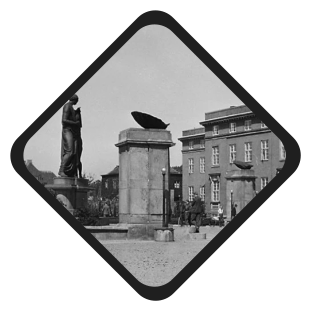
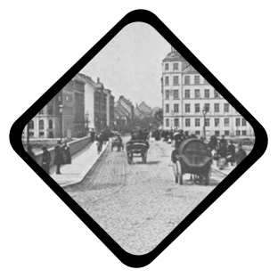
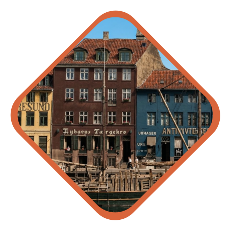
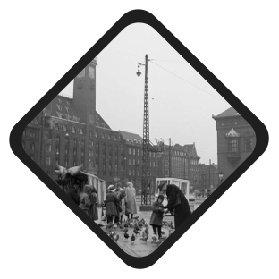
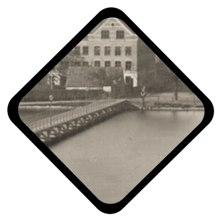
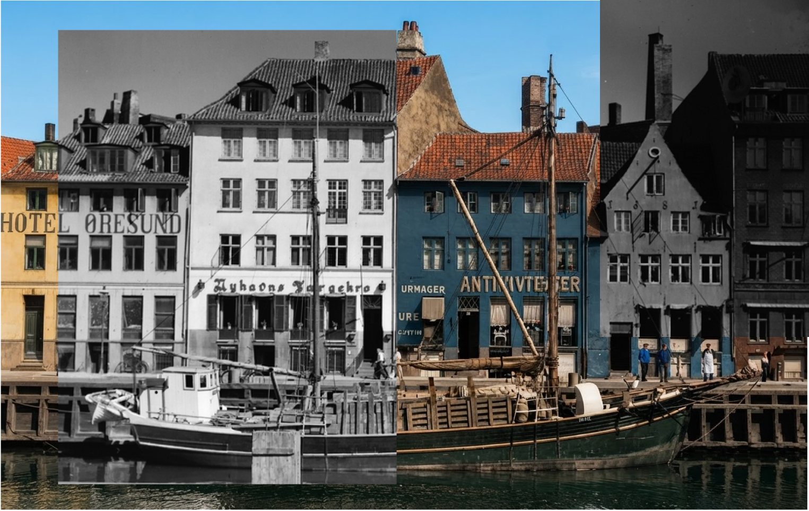

Constructed between 1670 and 1673 as a sea-canal gateway from the harbor into the city center, Nyhavn was originally packed with cargo ships, warehouses, rowdy sailors, taverns, and tattoo parlors.
Famous fairytale author Hans Christian Andersen lived at Nyhavn for much of his life. He wrote his very first fairytales while living at House No. 20, and later lived at No. 67 and No. 18.